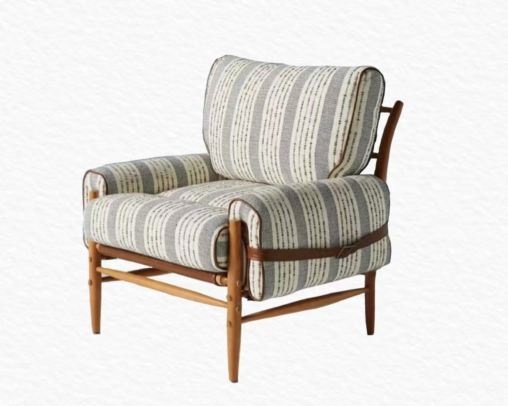

关于我们 · 渡物 Dimension
成立于2000年的渡物Dimension，是一家专注于 中端改善需求的定制家具企业。自创立以来，我们始终秉持“空间因人而异，家具因心而生”的理念，致力于将个性化设计与高效制造相结合，为不同生活阶段的用户提供舒适、实用且富有美感的家居方案。
经过二十余年的发展，渡物 Dimension 已在国内主要城市设立了十余个区域分部，并逐步拓展至东南亚与欧洲市场，形成了覆盖全球的服务网络。我们通过数智化设计平台和标准化生产体系，使用户能够轻松定制专属家具，真正实现“所见即所得”。
在业务层面，渡物 Dimension 年营收已突破 10亿元人民币，产品涵盖客厅、卧室、书房、办公与公共空间等多个领域。与此同时，我们积极与新锐设计师合作，不断推出符合时代审美的系列作品，以保持品牌的创造力与前瞻性。
未来，渡物 Dimension 将持续投入于 环保材料、模块化设计与空间智能化 方向的研发，努力成为推动家具行业升级的重要力量，让更多人找到属于自己的舒适空间。
历史沿革
2000年 · 创立启程
渡物 Dimension 于上海成立，最初以中端板式家具生产起家，致力于为改善型家庭提供经济与美观兼顾的居家选择。
2005年 · 定制化雏形
公司首次引入数字化设计工具，推出“可调尺寸衣柜”系列，成为行业内最早尝试小规模定制化生产的企业之一。
2010年 · 全国扩张
在北京、广州、成都等核心城市设立分部，建立线下体验馆，形成覆盖主要一二线城市的销售与服务网络。
2015年 · 数智升级
推出自主研发的“Dimension Cloud”家居设计平台，用户可在线完成空间规划与家具定制下单，业务模式全面向“互联网+家居”转型。
2020年 · 国际化布局
在新加坡设立海外总部，并进军东南亚与欧洲市场，凭借模块化家具与环保材料受到年轻消费者青睐。
2025年 · 多元发展
营收突破 10 亿元人民币，公司业务涵盖住宅、办公与公共空间多领域，携手国际设计团队研发 智能家居与可持续家具，持续引领中端定制家具的未来。
服务介绍
- 全屋定制
- 测量您的空间，2.5d设计软件为您提供最佳设计视野
- 打造您的风格，我们根据色系，地域，文化等主要元素为您推荐不同设计师的预设
- 组装您的家具，我们会以最快速度处理您的订单；发货，拼装，每个环节都可以询问我们的工程团队
- 个性化健康设计
- 生活化，规范化
- 可变规格，以适应您的需求
- 保证使用最好的材料
- 专业售后保障
- 接续设计支持：一流的无线/隐线桌面布局
- 七天之内退货：如果不适应您的布局，当然可以换
- 专业工程团队：全屋装修耗时耗力，我们的团队会迅速服务
实例产品
包括沙发、书桌、床具、餐桌椅等。支持个性化定制。
联系我们
Email: service@dimension.com
电话: 400-123-4567